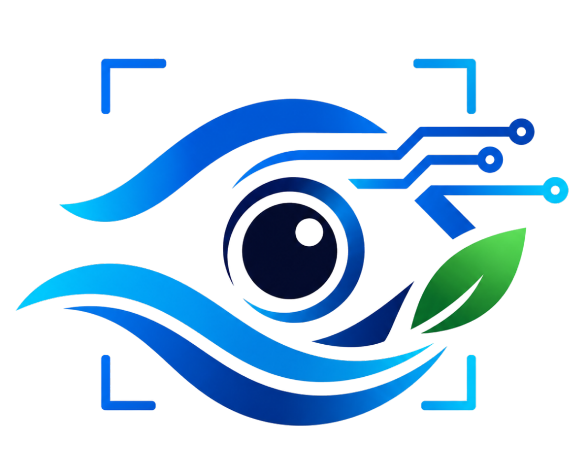

Orientado a la detección preventiva del arrojo directo de residuos sólidos, sector Puente Huallaga – UNHEVAL
Proyecto de Investigación Aplicada en Ciencia y Tecnología (CyT) — Universidad Nacional Hermilio Valdizán (UNHEVAL), Huánuco, Perú (2026-II)
SIVARH es un sistema inteligente de monitoreo y disuasión ambiental diseñado para operar en el borde (Edge Computing) en zonas críticas de las riberas del río Huallaga. Su objetivo fundamental es la intervención preventiva pre-impacto: detectar conductas de arrojo deliberado o negligente de residuos sólidos (littering) y emitir un estímulo auditivo disuasorio (nudge cognitivo) en tiempo real para provocar el desistimiento del infractor antes de que el desecho alcance el agua o la faja marginal.
A diferencia de las cámaras de seguridad convencionales o los detectores pasivos, SIVARH integra una arquitectura híbrida de visión artificial local (YOLOv8 + ByteTrack + estimación de pose + zonificación poligonal) y razonamiento semántico multimodal en la nube (OpenAI Vision GPT-5.6 Luna / GPT-4o) con síntesis de voz en streaming ultra-rápido (OpenAI TTS).
Para comprender el diseño actual de SIVARH, es clave examinar la transición tecnológica experimentada por el proyecto:
┌─────────────────────────────────────────────────┐
│ FASE 1: PROTOTIPO BÁSICO │
│ • Detección simple de personas (YOLOv1-like) │
│ • Disparo ciego de alertas por presencia │
│ • Alto índice de falsos positivos │
│ • Sin memoria temporal ni contexto espacial │
└────────────────────────┬────────────────────────┘
│
▼ Evolución arquitectónica
┌─────────────────────────────────────────────────┐
│ FASE 2 ACTUAL: SISTEMA AUTÓNOMO SIVARH │
│ • Detección multiclase (personas + residuos) │
│ • Tracking persistente ByteTrack (IDs únicos) │
│ • Memoria cinemática y trayectorias (15s) │
│ • Zonificación poligonal (Ribera / Alerta) │
│ • Asociación persona-objeto espaciotemporal │
│ • Estimación de pose (análisis biomecánico) │
│ • Buffer circular en RAM y selección uniforme │
│ • Razonamiento multimodal estructurado (VLM) │
│ • Decisión de 3 niveles y Nudge de voz (TTS) │
│ • Dashboard interactivo (Modo Manual y Auto) │
└─────────────────────────────────────────────────┘En su concepción inicial, el sistema operaba bajo un modelo ingenuo y reactivo:
Para superar estas fallas estructurales, SIVARH evolucionó hacia una solución autónoma multi-etapa:
bottle, cup, backpack, handbag).TrackHistory): Almacenamiento acotado (15 segundos) de las coordenadas de cada entidad con purga automática por TTL (Time-To-Live).ZoneManager): Segmentación del encuadre en zonas poligonales configurables (ej. Zona Ribera/Peligro, Zona Observación, Zona Segura/Vía Pública). Solo las interacciones que ocurren en o hacia la faja marginal pueden progresar.AssociationEngine): Evaluación espaciotemporal de cercanía e interacción entre personas y objetos sospechosos.pose.py): Detección de puntos clave de brazos y muñecas para reconocer posturas preparatorias de lanzamiento o desprendimiento.FrameSelector): Selección cronológica de 4 a 7 cuadros clave representativos de la secuencia de acción (antes, durante y después).AIAnalysisResult), distinguiendo explícitamente entre:DecisionEngine): Clasificación en tres categorías operativas: IGNORE, LOG_ONLY y WARN.SpeechService + AudioOutput): Emisión instantánea por altavoz de un nudge disuasorio generado con voz humana sintética de alta fidelidad.La zona de estudio comprende el corredor fluvial que divide los distritos metropolitanos de Huánuco, Amarilis y Pillco Marca, con epicentro en:
Los reportes del Organismo de Evaluación y Fiscalización Ambiental (OEFA) y la Fiscalía Especializada en Materia Ambiental (FEMA) identifican más de 216 puntos críticos de acumulación de basura en la cuenca del Huallaga en Huánuco, con una generación diaria de 100 a 120 toneladas de residuos.
Para mantener la viabilidad técnica y científica, SIVARH define con rigor su frontera de intervención:
| Fuente Contaminante | Mecanismo | Alcance en SIVARH |
|---|---|---|
| 1. Disposición directa por personas (Littering) | Arrojo manual e intencional de botellas PET, bolsas plásticas y empaques en la ribera. | ENFOQUE EXCLUSIVO |
| 2. Basura arrastrada por la corriente | Residuos flotantes transportados desde cuencas altas en época de crecida. | Fuera de alcance (requiere dragado/mallas) |
| 3. Efluentes de aguas residuales | Descargas cloacales domiciliarias e industriales (ej. Camal). | Fuera de alcance (requiere PTAR) |
| 4. Escombros clandestinos con volquetes | Descarga pesada nocturna en fajas marginales. | Fuera de alcance inicial (requiere fiscalización policial) |
| 5. Lixiviados y agroquímicos | Filtraciones de botaderos (Chilepampa) y pesticidas agrícolas. | Fuera de alcance algorítmico |
Las campañas de limpieza comunitaria periódicas son valiosas pero de efecto efímero: a los pocos días el punto crítico vuelve a regenerarse por la reincidencia conductual.
SIVARH se fundamenta en la Teoría del Pensamiento Dual (Daniel Kahneman):
SIVARH está construido bajo el principio de separación estricta de responsabilidades y concurrencia sin bloqueo:
CÁMARA (USB / RTSP / Video MP4)
│
▼
CameraSource (OpenCV DSHOW)
│
Flujo continuo (30 FPS)
│
┌────────────────────┴────────────────────┐
▼ ▼
VideoPipelineWorker FrameBuffer Circular
(Hilo secundario desacoplado) (5 muestras/seg durante 5s)
│ │
┌───────┴───────────────────────┐ │
▼ ▼ │
YOLOv8 Local ByteTrack Tracker │
(Personas y Objetos) (IDs únicos temporales) │
│ │ │
└───────────────┬───────────────┘ │
▼ │
SceneState │
(Zonas poligonales + Ocupación) │
│ │
▼ │
AssociationEngine │
(Relación Persona - Objeto) │
│ │
▼ │
¿Condición de Evento? ───────────────────────┤
│ (Sí: Modo Auto o Manual) │
▼ ▼
FrameSelector <─────────────────────────┘
(3, 4, 5 u 8 cuadros clave)
│
▼
ImageProcessor
(Resize 960w + JPEG 70 + B64)
│
▼
OpenAI Vision Client
(GPT-5.6 Luna / Structured Output)
│
▼
DecisionEngine
(Clasificación: IGNORE / LOG / WARN)
│
├── WARN ─────────────────────────┐
▼ ▼
SpeechService AudioOutput
(OpenAI TTS en streaming) (Altavoz Local)
│
▼
Database (SQLite)
(Registro de auditoría)
│
▼
WebSocket -> Dashboard WebVideoPipelineWorker): Captura fotogramas a tasa completa de la cámara, corre inferencias locales rápidas de detección y actualiza el estado global (SystemState).| Módulo | Ruta de Código | Responsabilidad Técnica |
|---|---|---|
| Servidor Principal | [app/main.py](app/main.py) |
Inicialización FastAPI, montaje de estáticos, rutas API y ciclo de vida de la aplicación. |
| Configuración | [app/config.py](app/config.py) |
Centralización tipada mediante Pydantic Settings de variables de entorno (.env). |
| Estado Global | [app/state.py](app/state.py) |
Instancia singleton reactiva system_state con observadores y notificaciones WebSocket. |
| Abstracción de Video | [app/camera/](app/camera/) |
Control de cámaras USB (usb_camera.py), streams IP (rtsp_camera.py) y archivos de prueba (video_file.py). |
| Worker del Pipeline | [app/camera/worker.py](app/camera/worker.py) |
Bucle principal de adquisición, despacho de frames al buffer, llamada a YOLO y control de modo manual. |
| Detector Local | [app/vision/detector.py](app/vision/detector.py) |
Inferencia con Ultralytics YOLOv8 para person, bottle, cup, backpack, handbag. |
| Rastreo (Tracker) | [app/vision/tracker.py](app/vision/tracker.py) |
Adaptador de ByteTrack para asociación frame-a-frame de identidades temporales continuas. |
| Zonificación | [app/vision/zones.py](app/vision/zones.py) |
Gestor de polígonos normalizados, comprobación punto-en-polígono y cálculo de ocupación por zona. |
| Historial Cinemático | [app/vision/track_history.py](app/vision/track_history.py) |
Registro de posiciones pasadas, cálculo de velocidad y purga automática por TTL. |
| Asociación | [app/vision/associations.py](app/vision/associations.py) |
Detección de proximidad, solapamiento y correlación espacial entre personas y residuos. |
| Pose Biomecánica | [app/vision/pose.py](app/vision/pose.py) |
Esqueleto corporal para análisis de ángulos de hombros, codos y muñecas en ademanes de tiro. |
| Buffer de Fotogramas | [app/vision/frame_buffer.py](app/vision/frame_buffer.py) |
Cola doble (collections.deque) muestreada en memoria RAM (5 fps, 5 segundos). |
| Selector de Cuadros | [app/vision/frame_selector.py](app/vision/frame_selector.py) |
Algoritmo de sub-muestreo temporal uniforme para extraer secuencias compactas. |
| Compresión | [app/vision/image_processor.py](app/vision/image_processor.py) |
Reescalado a resolución óptima, compresión JPEG al 70% y serialización Base64. |
| Cliente VLM | [app/ai/vision_client.py](app/ai/vision_client.py) |
Envío de secuencias a OpenAI Vision (GPT-5.6 Luna) y parseo estricto del esquema JSON. |
| Motor de Decisión | [app/events/decision_engine.py](app/events/decision_engine.py) |
Reglas de negocio para clasificar en IGNORE, LOG_ONLY o WARN según umbrales de confianza. |
| Síntesis de Voz | [app/speech/tts_service.py](app/speech/tts_service.py) |
Generación de audio mediante OpenAI TTS con soporte de streaming PCM de baja latencia. |
| Reproducción Local | [app/speech/audio_output.py](app/speech/audio_output.py) |
Emisión física del audio a través de los altavoces de la estación de borde. |
| Almacenamiento | [app/storage/database.py](app/storage/database.py) |
Base de datos SQLite para auditoría forense de eventos, imágenes clave y decisiones. |
| Dashboard Frontend | [frontend/](frontend/) |
Interfaz gráfica web moderna con streaming en vivo, métricas, controles y visualizador de secuencias. |
El modelo de visión artificial responde obligatoriamente bajo este esquema validado:
class AIAnalysisResult(BaseModel):
person_detected: bool # ¿Hay al menos una persona visible en la secuencia?
suspected_disposal: bool # ¿Hay un ademán o acción sospechosa de arrojo?
action_completed: bool # ¿El residuo quedó efectivamente desprendido/abandonado?
confidence: float # Grado de certeza de la inferencia (0.00 a 1.00)
diagnosis: str # Diagnóstico técnico en 1 o 2 oraciones
suggested_warning: str | None # Frase disuasoria recomendada para el infractor
reasoning: str | None # Justificación paso a paso de la conclusión visualLa transición del resultado a una acción física sigue una lógica rigurosa:
IGNORE: Si suspected_disposal == False o la confianza no alcanza el umbral mínimo (0.40). No se emite audio ni se alerta.LOG_ONLY: Si hay sospecha pero action_completed == False o la confianza es intermedia (0.40 ≤ conf < 0.80). Se guarda registro fotográfico y forense en SQLite para análisis, pero no se emite audio para evitar falsos positivos hacia el transeúnte.WARN: Si action_completed == True y confidence >= 0.80 (umbral configurable en .env). Se activa de inmediato el SpeechService para reproducir la advertencia y se marca el evento como alerta activa en el dashboard.| Método | Ruta | Descripción |
|---|---|---|
GET |
/api/status |
Retorna el estado global del sistema: cámara, tracks, FPS, métricas y logs recientes. |
POST |
/api/system/start |
Inicia la cámara y el worker de procesamiento de video. |
POST |
/api/system/stop |
Detiene la cámara y el worker de video. |
GET |
/api/events |
Lista los eventos históricos almacenados en la base de datos SQLite. |
GET |
/api/events/{id} |
Retorna el detalle completo de un evento específico, incluyendo fotogramas clave. |
GET |
/api/config |
Obtiene la configuración actual del sistema en tiempo de ejecución. |
PATCH |
/api/config |
Modifica dinámicamente parámetros de configuración en caliente. |
| Método | Ruta | Descripción |
|---|---|---|
POST |
/api/system/manual/start-recognition |
Inicia la ráfaga de 4 capturas automáticas espaciadas por 1.5s. |
POST |
/api/system/manual/send-images |
Envía la secuencia capturada a OpenAI Vision para su análisis y decisión. |
POST |
/api/debug/test-speech |
Prueba la síntesis de voz OpenAI TTS y la reproducción por el altavoz. |
POST |
/api/debug/test-vision |
Prueba el cliente multimodal con una imagen estática de prueba. |
/ws/status: Envía pulsos de telemetría continuos (JSON) al frontend con: FPS real, número de personas y objetos detectados, ocupación por zona, tracks activos, estado de la IA y logs del sistema./video_feed: Transmisión MJPEG en vivo con bounding boxes, zonas y overlays de depuración opcionales.Los parámetros principales que gobiernan el comportamiento operativo de SIVARH se configuran en el archivo .env:
# Configuración del Modelo de Visión OpenAI
OPENAI_API_KEY=sk-...
OPENAI_VISION_MODEL=gpt-5.6-luna
OPENAI_VISION_REASONING_EFFORT=none
IMAGE_DETAIL=low
# Configuración de Síntesis de Voz (TTS)
OPENAI_TTS_MODEL=gpt-4o-mini-tts
OPENAI_TTS_VOICE=onyx
OPENAI_TTS_SPEED=1.1
OPENAI_TTS_RESPONSE_FORMAT=pcm
OPENAI_TTS_STREAM_BUFFER_MS=400
# Parámetros de Cámara y Video
CAMERA_SOURCE=0
CAMERA_FPS=30
CAMERA_WIDTH=1280
CAMERA_HEIGHT=720
# Detector Local YOLOv8
YOLO_MODEL=yolov8n.pt
YOLO_PERSON_CONFIDENCE=0.50
# Buffer Temporal y Eventos
BUFFER_SECONDS=6
EVENT_CAPTURE_SECONDS=5.6
SEQUENCE_FRAME_INTERVAL_SECONDS=0.8
EVENT_COOLDOWN_SECONDS=20
# Modo de Reconocimiento Manual (Pruebas de Campo)
MANUAL_RECOGNITION_MODE=True
MANUAL_CAPTURE_FRAMES=4
MANUAL_CAPTURE_INTERVAL_SECONDS=1.5
IMAGE_MAX_WIDTH=960
JPEG_QUALITY=70
# Umbral del Motor de Decisión
AI_WARNING_THRESHOLD=0.80
# Servidor de Red
APP_ENV=development
DEBUG=True
HOST=127.0.0.1
PORT=8000Para iniciar el servidor y el dashboard:
# Activar el entorno e iniciar el sistema
py -3.11 run.pyEl servidor quedará disponible en http://127.0.0.1:8000.
WARN.El sistema cuenta con una exhaustiva suite de pruebas automatizadas con pytest, cubriendo todos los subsistemas críticos:
test_tracker.py y test_track_history.py: Asociación frame-a-frame de identidades de ByteTrack y memoria cinemática.test_zones.py y test_scene_state.py: Cálculo geométrico de polígonos y ocupación de zonas.test_associations.py y test_worker_associations.py: Correlación espacio-temporal persona–objeto.test_pose.py: Estimación de keypoints y posturas biomecánicas.test_frame_buffer.py y test_frame_selector.py: Ingesta muestreada y algoritmos de selección uniforme.test_ai_schema.py: Validación del contrato estructurado JSON de OpenAI.test_audio_output.py: Pipeline de reproducción de audio.test_runtime_config.py: Modificación en caliente de parámetros vía API.Resultado de la suite de pruebas: 49 pruebas ejecutadas y aprobadas (100% PASS).